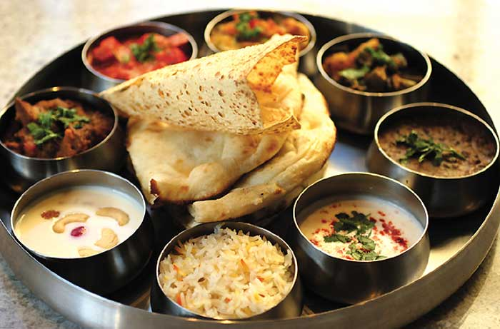
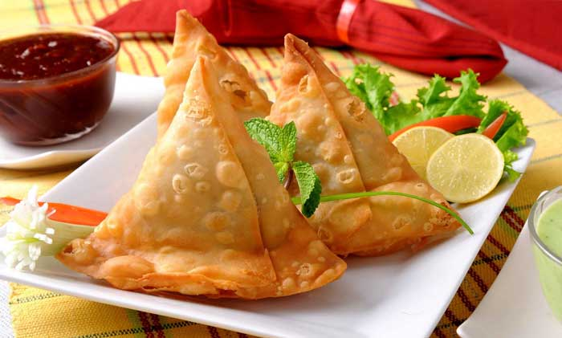
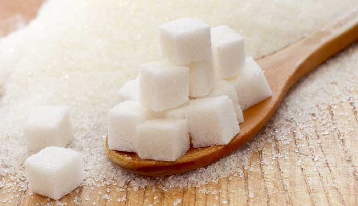

HOME
DID YOU KNOW?
1) According to Indian food theory, there are six different tastes: sweet, sour, salty, spicy, bitter, and astringent

2)Love eating samosas? Here’s a shocker for you – it’s not Indian

3) 70% of all the world’s spices come from India
4)The crystallization and making of sugar from sugarcane juice began in India

5)Speaking of sugar, did you know that by the 5th century AD, crystallized sugar was referred to as khanda and this is where the word candy is derived from